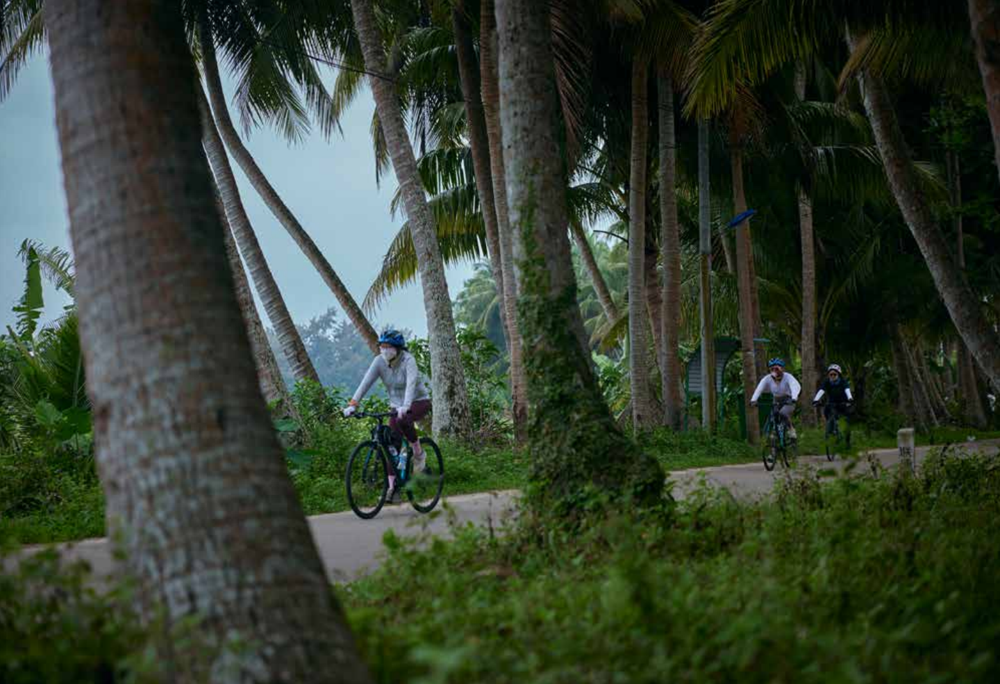

Only by cycling slowly around the island can you experience the real flavor of Hainan.

This reported feature follows a group of beginner cyclists riding along Hainan’s eastern coast. Rather than focusing on speed, endurance, or completing a loop, it looks at cycling as a way of slowing down—entering towns, tea houses, countryside paths, and everyday scenes that are often skipped by cars.
Excerpt 1: Laoba Tea, and the Pace of Hainan
Midway through the first day’s journey, it was only after a cup of “laoba tea” that the distinctiveness of cycling in Hainan truly revealed itself. People often say Hainan life is made of three things: Qiong opera, lottery tickets, and laoba tea. The moment I arrived in Haikou, the tea houses scattered through the streets—locals sitting in small groups around tables—left me with a strong impression of the island’s slow tempo.
In Hainanese, “laoba” usually refers to older men. But laoba tea is not only for “laoba.” From morning tea to afternoon tea to evening tea, a pot of tea with two or three small plates of pastries gathers everyone—men and women, young and old—to pass long hours in unhurried conversation. This tea-drinking spectacle is one of the most common street scenes in Hainan, especially around Haikou.
After finishing our morning goal of 60 kilometers, we entered Fengpo Town in Wenchang. Once our leader Azhong had collected the bikes, he took us to try the local specialty: plain-boiled Wenchang chicken. It was noon, the sun was fierce, and the afternoon target was not demanding—just a little over 30 kilometers—so he suggested we sit down again and try laoba tea. The teahouse was in town and fairly large. Under the outdoor umbrellas, five or six wooden tables were placed casually, and the plastic stools around them were already full: middle-aged men with bare arms, and also stylishly dressed young women.
Excerpt 2: Kumquat, Routes, and “Slow” as a Method
Because of the heat, we followed Azhong’s lead and ordered an iced kumquat-lemon black tea. After only two days in Hainan, we had already noticed something quickly—kumquat is the soul of Hainan food. In local eateries, you rarely find vinegar at the condiment station; instead there is a plate of small green kumquats with slits cut into them. Whether it was Wenchang chicken or a “zaopo vinegar” hotpot, the sour kumquat is an indispensable seasoning on locals’ dipping plates. The scent of kumquat is everywhere on this island; this acidity has long blended into everyday life.
When a large cup of lemon tea arrived—only five yuan—Azhong reminded us to stir carefully at the bottom: “It’s all sugar down there. If you mix it all at once, it’ll be very sweet.” He lifted the iron kettle we had ignored and gestured that it, too, was full of tea; once we finished, we could refill ourselves. “That’s why you stir slowly—otherwise later, when you refill, it won’t be sweet.” Only then did we understand how a single pot of tea could support hours of aimless conversation. What makes laoba tea most appealing is its looseness. In the calm murmur of talk, cup after cup is refilled, as if time itself is being sipped away—the big city’s frantic rhythm is completely worn down here. “Slow,” Azhong warned us again and again: “Since you’re already in Hainan, why rush?”
During the ride, Azhong always asked us to slow down—slower still—so we wouldn’t miss the scenery he had planned. I should add that our cycling group was a beginner team of five, including me and the photographer Huang Yu; the other three were all women. Feifei came alone from Hangzhou; Wang Jie and Teacher Qi were old friends who met in Haikou to set off together. The night before departure, we had an ice-breaking session. After hearing everyone’s background, Azhong realized almost none of us had long-distance cycling experience—only I, who came mainly for reporting, had ridden around Qinghai Lake. So he started redesigning routes for us: easier, with better scenery. Having many route options is also what makes riding around Hainan very different from the Sichuan–Tibet line or Qinghai Lake. Before joining, we had heard that “517 Cycling Post” was the biggest cyclists’ club on the island, so we went to consult them. The owner, Chonzi, told us Hainan’s road system is complex: national highways, township roads, village roads crisscross each other. Unlike Qinghai Lake or the Sichuan–Tibet line, you can’t just follow one road. And phone navigation often won’t recommend the distinctive routes, so people who come to loop the island on their own—without doing enough homework—often spend most of their time chasing cars on national highways and inhaling exhaust. After finishing, they may feel Hainan isn’t as beautiful as they imagined.
Excerpt 3: Only on a Bicycle Do the Senses Fully Open
Only on a bicycle can the senses fully open. Before coming to Hainan, I had never imagined the island could have such vivid pastoral scenery. Along the countryside paths, we often saw cattle and sheep grazing leisurely, and ducks happily playing in the waterways.
“Experience more, observe more,” Azhong often said. If you don’t learn to slow down, he thought you might as well ride at home—because even if you have a chance to return to Hainan, without cycling it’s still hard to go deep into the island’s corners and feel the “real Hainan.”
“Cycling is just a way,” he said.